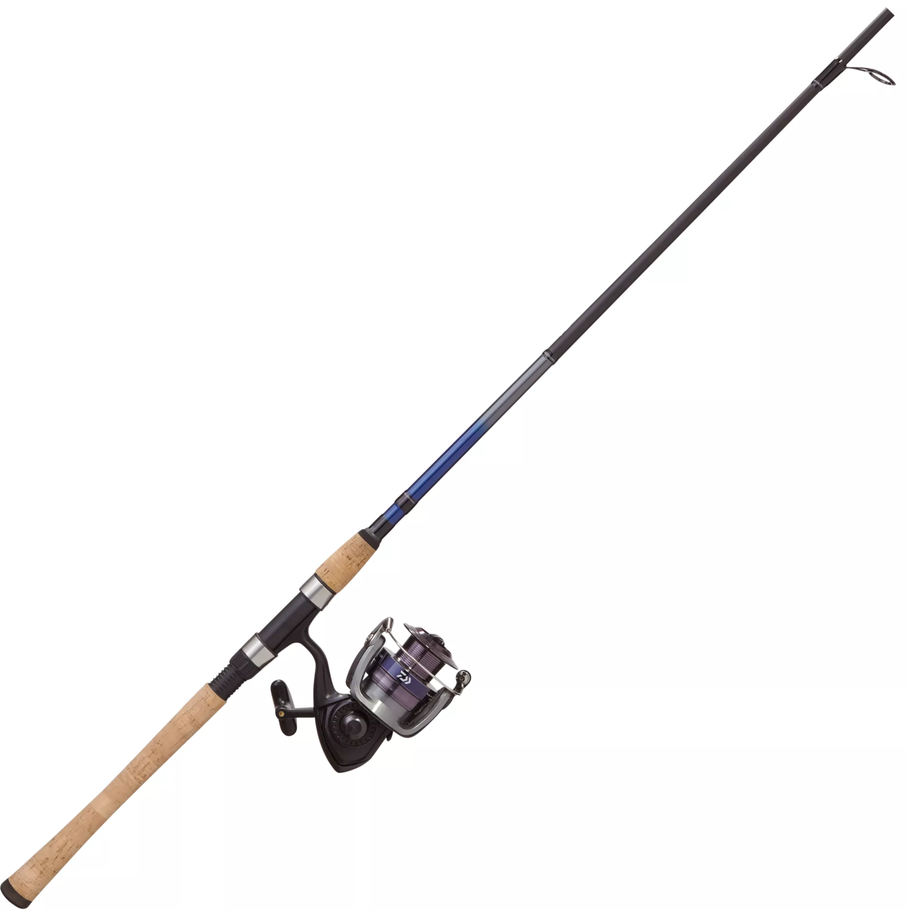

ever wonder if you have the right rod for the job? look no further.
here, i'll show you three of my favorite rods for different situations - a wallet saver, a creek-catcher, and a trustworthy bass-catching baitcaster.
-

-
Daiwa Samurai 6'6 Medium Combo
Do you want to start fishing? Maybe it seems like an expensive endeavor. Well, this rod is here to tell you otherwise. At only $25 for a rod and reel combo, this rod is a great place to start. The Daiwa Samurai combo comes equipped with spinning reel - which is generally regarded as the easiest and most versatile reel to learn on. The Samurai reel is not known for being high quality, but it does boast high durability.
Check this rod out here! -
Tango 5'5 Ultra Light Rod
This is a great rod for when you wanna throw smaller lures. Whether you're tossing for bluegill, crappie, or even bass, this rod will give you much further range with little bitty spoons and grubs. And of course the ultra light action will provide heightened sensitivity as well. This can be a pro and a con. Many times I've felt a tug, and pulled back hard to set the hook, only to rip a piece of algae out of the water. I can't forget the times though, that this thing has helped me feel the most minute nibbles from bluegills too, allowing me to plink em from their tiniest bites. Overall, this is a good choice if you want to buy a durable, sensitive rod under $50.
Check out this rod here! -
Lew's Speed Spool 6'6 Medium Heavy Combo
For those of you just getting into baitcasters - this is a good first choice. Lew's doesn't skimp on their quality, unlike some other big names in this price range *Abu Garcia*. The Speed Spool reel provides buttery action. The reel's brakes are magnetic. I have no clue what that means, and I generally keep my brakes around 7. The tension knob is a bit tighter than other baitcasters I've used - this provides for a lower chance that your tension's gonna loosen up on you. As for the rod - it's perfect for throwing soft plastics and ripping bass lips of any size. As long as you treat it well, this thing is sure to last you a few years.
Check out this rod here!